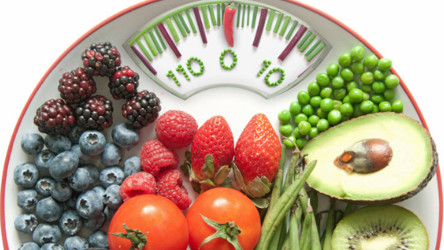

Alimentation saine
Principaux faits

Une alimentation saine aide à se protéger contre toutes les formes de malnutrition, ainsi que contre les maladies non transmissibles parmi lesquelles le diabète, les cardiopathies, les accidents vasculaires cérébraux et le cancer.
Une mauvaise alimentation et le manque d’exercice physique sont les principaux risques pour la santé à l’échelle mondiale.
Des habitudes alimentaires saines commencent dès le plus jeune âge : l’allaitement au sein favorise une croissance en bonne santé et améliore le développement cognitif. Il pourrait aussi avoir des bénéfices à long terme, par exemple une réduction du risque de surpoids, d’obésité ou de maladies non transmissibles au cours de la vie.
Au niveau énergétique, l’apport (en calories) doit être adapté à la dépense. Pour éviter toute prise de poids excessive, les graisses ne devraient pas dépasser 30 % de l’apport énergétique total.
Aperçu général
L’adoption d’un régime alimentaire sain tout au long de la vie contribue à prévenir toutes les formes de malnutrition, ainsi qu’un grand nombre de maladies et pathologies non transmissibles. Pourtant, la production croissante d’aliments transformés, l’urbanisation rapide et l’évolution des modes de vie ont provoqué un changement des habitudes alimentaires. Les gens consomment désormais davantage d’aliments très caloriques, riches en graisses, en sucres libres ou en sel/sodium, et beaucoup ne mangent pas suffisamment de fruits, de légumes et de fibres alimentaires, comme celles apportées par les céréales complètes.
La composition exacte d’une alimentation diversifiée, équilibrée et saine varie selon les besoins individuels (par exemple selon l’âge, le sexe, le mode de vie et l’exercice physique), le contexte culturel, les aliments disponibles localement et les habitudes alimentaires. Mais les principes de base de ce qui constitue un régime alimentaire sain demeurent les mêmes.
Pour les adultes
Un régime alimentaire sain est composé des éléments suivants:
des fruits, des légumes, des légumineuses (par exemple, des lentilles et des pois), des fruits secs et des céréales complètes (par exemple du maïs, du millet, de l’avoine, du blé et du riz brun non transformés).
au moins 400 g (soit 5 portions) de fruits et légumes par jour ; les pommes de terre, les patates douces, le manioc et les autres racines amylacées ne font pas partie des fruits et des légumes.
moins de 10 % de l’apport énergique total provenant de sucres libres , soit l’équivalent de 50 g (ou environ 12 cuillères à café rases) pour une personne de poids normal consommant environ 2000 calories par jour ; dans l’idéal, pour préserver davantage la santé, cette part devrait être inférieure à 5 % des apports énergiques totaux . Les sucres libres sont ajoutés aux aliments ou aux boissons par le fabricant, le cuisinier ou le consommateur, mais on les retrouve aussi naturellement dans le miel, les sirops, les jus de fruits ou les concentrés de jus de fruits.
moins de 30 % de l’apport énergétique total provenant des matières grasses . Il convient de préférer les graisses insaturées (qu’on trouve dans le poisson, l’avocat et les noix, ainsi que dans les huiles de tournesol, de soja, de colza et d’olive) aux graisses saturées (qu’on trouve dans la viande grasse, le beurre, l’huile de palme et de noix de coco, la crème, le fromage, le beurre clarifié et le saindoux) et aux acides gras trans de toutes sortes. Il existe ainsi des acides gras trans industriels (qu’on trouve dans les aliments cuits au four et frits ainsi que dans les en‑cas et dans les aliments préemballés, par exemple les pizzas congelées, les tartes, les cookies, les biscuits, les gaufres ou encore les huiles de cuisson et les pâtes à tartiner), de même que des acides gras trans issus des ruminants (qu’on trouve dans la viande et les produits laitiers provenant des animaux ruminants comme les vaches, les moutons, les chèvres et les chameaux). Il est proposé de réduire l’apport en graisses saturées à moins de 10 % de l’apport énergétique total et celui en acides gras trans à moins de 1 % (5). Les acides gras trans industriels, en particulier, ne peuvent pas faire partie d’une alimentation saine et devraient en être exclus .
moins de 5 g de sel (soit environ une cuillère à café) par jour , en privilégiant le sel iodé.
Pour les nourrissons et les jeunes enfants
Au cours des deux premières années de la vie d’un enfant, une nutrition optimale favorise une croissance en bonne santé et améliore le développement cognitif. Elle réduit aussi le risque de surpoids, d’obésité ou de MNT à un stade ultérieur de la vie.
Les conseils pour un régime alimentaire sain chez les nourrissons et les enfants sont les mêmes que pour les adultes, en ajoutant les éléments importants suivants :
les nourrissons devraient être allaités exclusivement au sein pendant les six premiers mois de leur vie.
il convient de poursuivre l’allaitement au sein en continu jusqu’à l’âge de deux ans et au‑delà.
à partir de l’âge de six mois, le lait maternel doit être complété par des aliments variés, adaptés, sûrs et riches en nutriments. Il ne faut pas ajouter de sel et de sucre aux aliments de complément.
Conseils pratiques pour une alimentation saine
Fruits et légumes
La consommation d’au moins 400 g, soit cinq portions, de fruits et légumes par jour réduit le risque de maladies non transmissibles et permet de garantir un apport quotidien suffisant en fibres alimentaires.
Voici quelques pistes pour augmenter la consommation de fruits et légumes :
manger des légumes à tous les repas ;
manger des fruits frais et des légumes crus comme en‑cas ;
consommer des fruits et des légumes frais de saison ; et
diversifier les fruits et les légumes consommés.
Graisses
La diminution des apports totaux en graisses à moins de 30 % de l’apport énergétique total permet aux adultes d’éviter de prendre trop de poids .
En outre, le risque de développer des maladies non transmissibles baisse en adoptant les comportements suivants :
réduction des graisses saturées à moins de 10 % de l’apport énergétique total ;
réduction des acides gras saturés à moins de 1 % de l’apport énergétique total ; et
remplacement des graisses saturées et des acides gras trans par des graisses insaturées (2,3), en particulier par des graisses polyinsaturées.
Il est possible de réduire les apports en graisses, en particulier en acides gras trans industriels en procédant comme suit :
cuire à la vapeur ou faire bouillir plutôt que frire les aliments ;
remplacer le beurre, le saindoux et le beurre clarifié par des huiles riches en graisses polyinsaturées comme l’huile de soja, de colza, de maïs, de carthame ou de tournesol ;
manger des produits laitiers allégés et de la viande maigre, ou retirer la graisse visible de la viande ; et
limiter la consommation d’aliments cuits au four et frits, ainsi que d’en‑cas et d’aliments préemballés (par exemple des beignets, des gâteaux, des tartes, des cookies, des biscuits et des gaufres) qui contiennent des acides gras trans industriels.
Sel, sodium et potassium
La plupart des gens ont des apports excessifs en sodium à cause de la consommation de sel (en moyenne 9 g à 12 g de sel par jour) et des apports insuffisants en potassium (moins de 3,5 g). Cela contribue à l’hypertension artérielle qui, elle‑même, accroît le risque de cardiopathies et d’accident vasculaire cérébral .
Chaque année, 1,7 million de décès pourraient être évités en réduisant la consommation de sel pour atteindre le niveau recommandé de moins de 5 g par jour .
Souvent, les gens n’ont pas conscience des quantités de sel qu’ils consomment. Dans de nombreux pays, la plupart du sel provient des aliments transformés (par exemple les plats préparés, les viandes transformées comme le bacon, le jambon ou le saucisson, les fromages, et les en‑cas salés) ou des aliments consommés fréquemment en grandes quantités (par exemple le pain). Le sel est également ajouté en cours de cuisson (par exemple sous forme de bouillon ou de bouillon‑cube, de sauce de soja et de sauce de poisson) ou encore à table (sel de table).
La consommation de sel peut être limitée en adoptant les stratégies suivantes :
limiter la quantité de sel et de condiments à forte teneur en sodium (par exemple la sauce soja, la sauce de poisson et le bouillon) ajoutée pendant la cuisson et la préparation des aliments ;
ne pas mettre de sel ou de sauces à forte teneur en sodium sur la table ;
limiter la consommation d’en‑cas salés ; et
choisir des produits à faible teneur en sel.
Certains fabricants reformulent les recettes pour réduire la teneur en sel dans leurs produits et il est utile de contrôler les étiquettes pour vérifier la teneur en sodium d’un produit avant de l’acheter et de le manger.
On peut augmenter l’apport en potassium, susceptible d’atténuer les effets négatifs d’une forte consommation de sel sur la tension artérielle, en mangeant des fruits et légumes frais.
Sucres
Chez les adultes comme chez les enfants, la consommation de sucres libres ne devrait pas dépasser 10 % de l’apport énergétique total . Passer en dessous de 5 % de l’apport énergétique total permettrait d’augmenter les bienfaits pour la santé .
La consommation de sucres libres augmente le risque de caries dentaires. L’excès de calories consommées dans les aliments et les boissons riches en sucres libres contribue également à une prise de poids mauvaise pour la santé, pouvant entraîner surpoids ou obésité. Les dernières données factuelles montrent également que les sucres libres ont un effet sur la tension artérielle et les lipides sériques, et laissent entendre qu’une réduction de la consommation de sucres libres réduit les facteurs de risque des maladies cardiovasculaires .
La consommation de sucres peut être limitée en adoptant les stratégies suivantes :
limiter la consommation d’aliments et de boissons à forte teneur en sucres, par exemple les en‑cas sucrés, les bonbons et les boissons sucrées (c’est‑à‑dire tous les types de boissons contenant des sucres libres, à savoir les sodas, les boissons non gazeuses, les jus de fruits ou de légumes, les concentrés liquides ou en poudre, les eaux aromatisées, les boissons énergétiques et pour le sport, le thé et le café prêts à boire,
grignoter des fruits frais et des légumes crus plutôt que des en‑cas sucrés.